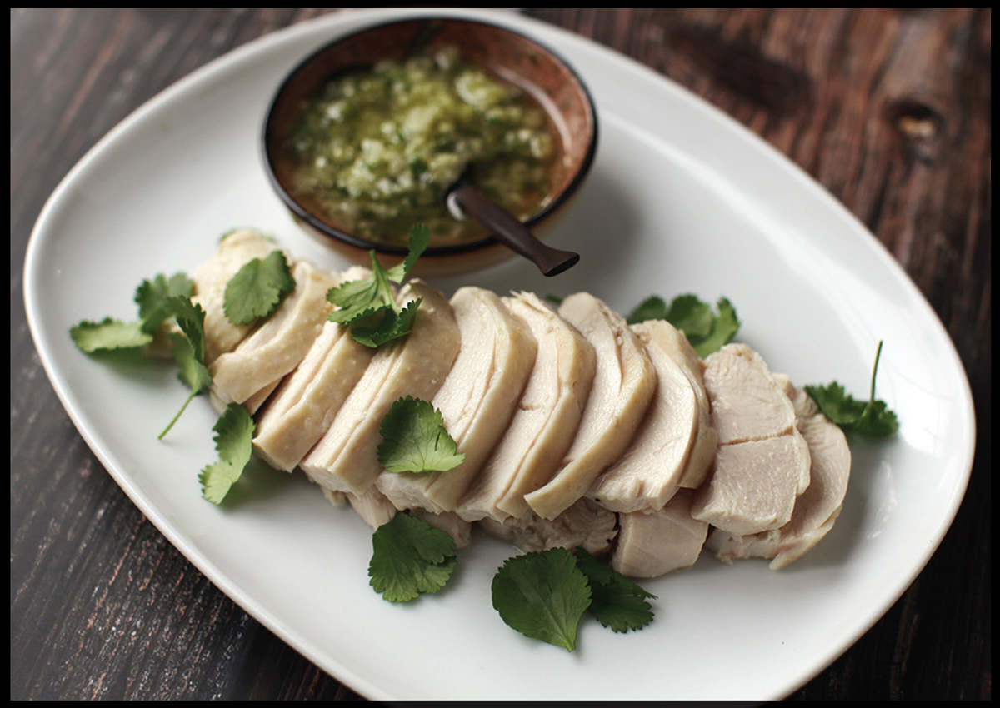
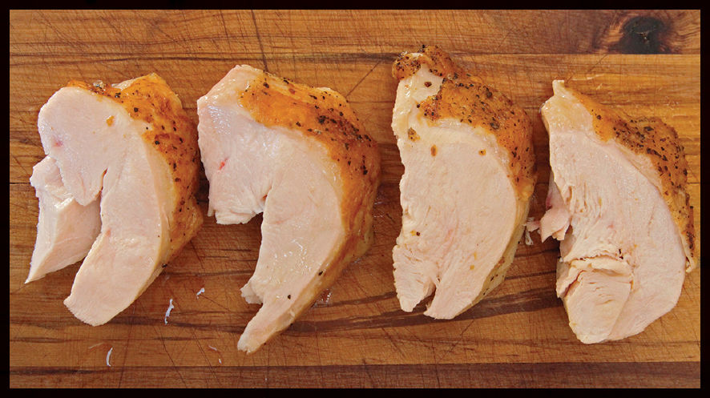

Safe (and Juicy!) Poached Chicken Breasts

I love chicken breast meat. It wasn’t always this way. For years I was convinced that the only people interested in eating chicken breast were dieters and those afraid of flavor. That was before I discovered that, when cooked properly, breast meat can be every bit as juicy as dark meat, while also providing a perfect canvas for a host of other flavors. The secret is using a gentle, moist cooking technique and paying careful attention to temperatures.
Easier said than done. (We’re going to do a deep dive here, so if you prefer to jump straight into the action, skip to “The Short Version” on here.)
While poaching is a classic technique for chicken in cuisines across Europe and Asia, it hasn’t been met with the same enthusiasm in the United States, where it often feels like if something is not brown and crispy, it’s not worth eating. I blame it partly on our fascination with deep frying, a technique that historically gained popularity due to the availability of inexpensive oil and the natural preservative qualities that frying gives foods (the hot food is encased in a dry, hard shell that is inhospitable to bacterial or fungal contamination). But the bulk of the blame can be placed on the well-intentioned folks at the USDA and their recommendation that chicken be cooked to 165°F (74°C), a temperature at which it becomes dry as chalk, no matter what method you use to cook it.
This is due to the structure of muscles, particularly the muscles that form breast meat. As we all know, poultry has two kinds of meat.
Dark meat is made of slow-twitch muscles. These are muscles that the chicken uses steadily throughout its life, like its thighs, drumsticks, and the muscles along its back. Because they are used frequently, they tend to be high in connective tissue and command a correspondingly large blood supply, giving dark meat a stronger flavor and darker color. Practically in cooking, dark meat tends to stay juicier and is more forgiving during cooking because of the moistening effect that the breakdown of connective tissue provides for it.
Light meat is made of fast-twitch muscles. These are muscles that are used infrequently and in short bursts, including the breasts and wings.* Fast-twitch muscles don’t need a strong and steady blood supply and are typically more subtle in flavor and lighter in color. Because of its lack of connective tissue, white meat is also more prone to drying out.
These differences in dark and light meat exist even in wild birds, but with domesticated chicken there’s another factor at play that accentuates these differences. Modern chickens are bred to grow extremely fast and to have huge breasts that are low in fat and connective tissue. This makes the breasts of your standard supermarket chicken significantly milder in flavor and more prone to drying out than those on a heritage-breed chicken that has a more reasonably proportioned figure. Moreover, because younger animals tend to have softer bones and more connective tissue than mature animals, the dark meat of modern chickens—typically slaughtered at just 5 to 7 weeks of age—are extremely high in connective tissue.
All that is to say that for folks who don’t like breast meat, I don’t blame you. Breast meat is almost always dry and flavorless. So why bother with it? Why not just give you a recipe for a whole poached chicken so that you can grab the leg meat and your hapless guests get saddled with the breast? Or better yet, why not just poach chicken legs and forget about the breasts entirely?
Well, it’s because I am at the point where I actually prefer light meat to dark most of the time, and I believe you may come to feel the same way once you’ve discovered how juicy and delicious poached-and-dressed chicken breast meat can be.
So how do you keep it moist and juicy? There are a few methods. Using a sous-vide device, a tool that allows you to maintain a water bath at a very precise temperature (within a single degree of accuracy), makes it extremely easy. Given that you can now buy one for under $100, I’ll give you instructions on how to use one for poaching chicken breasts. (If you have one of those newfangled steam-injected precision ovens, that’ll do the job in the exact same way.)
The low-tech way is to simply use a wok or a saucepan and a thermometer. It takes a little more care and attention, but no more than stirring a pot of polenta or, say, properly brushing and flossing your teeth.
Before we get to the poaching, we need to understand a little bit about food safety.
CHICKEN AND FOOD SAFETY
There is a misconception about what constitutes a safe cooking temperature for meat. If you’ve ever worked in a restaurant or taken a ServSafe class, you’ve probably heard of the 40° to 140°F (4° to 60°C) “danger zone,” the temperature range in which bacteria supposedly thrive. You’ve been given urgent warnings to avoid serving any food that has remained within this range for a total time of four hours. You’ve probably also heard that for chicken to be safe it ought to be cooked all the way to 165°F.
Yet there are modern techniques, such as sous-vide-style cooking, that can take place well below the 140°F mark, in excess of four hours. My own recommendation for chicken white meat is 150°F (66°C), well below the 165°F target we’ve all learned. What gives? Is 150°F chicken safe to eat?
Here’s the thing: Industry standards for food safety are designed primarily to be simple to understand, usually at the expense of accuracy. The rules are set up such that anybody can grasp them, ensuring safety across the board. But for single-celled organisms, bacteria are surprisingly complex, and despite what any ServSafe chart might have you believe, they refuse to be categorized into a step function.
With salmonella in chicken, for instance, what the USDA is looking for here is a 7.0 log10 reduction in bacteria. That is, a reduction that ensures that out of every 10,000,000 bacteria living on that piece of chicken to start, only one will survive. Pasteurization, or the process of destroying pathogens on food through heat treatment, is a function of both time and temperature. The higher the temperature, the less time it takes. Here is a chart from the USDA’s own literature that shows the time it takes to safely pasteurize chicken with 5 percent fat content against salmonella, a particularly hardy germ.
Temperature |
Time to achieve 7.0 log10 reduction in salmonella |
136°F (58°C) |
68.4 minutes |
140°F (60°C) |
27.5 minutes |
145°F (63°C) |
9.2 minutes |
150°F (66°C) |
2.8 minutes |
155°F (68°C) |
47.7 seconds |
160°F (71°C) |
14.8 seconds |
165°F (74°C) |
Less than 2 seconds |
As you can see, at 165°F, you achieve pasteurization nearly instantly. It’s the bacterial equivalent of shoving a stick of dynamite into an anthill.
At 136°F (58°C), on the other hand, it takes a little over an hour for the bacteria to slowly wither to death in the heat. (In fact, if you’ve got a device that can cook with degree-accuracy, such as a sous-vide circulator or a modern precision steam oven, you can even pasteurize chicken at temperatures as low as 130°F (54°C)—not that you’d want to: chicken at 130°F looks, feels, and tastes raw.)
At 150°F (66°C), that time is 2.8 minutes. Only 2.8 minutes! What this means is that as long as chicken stays at 150°F or higher for at least 2.8 minutes, it is as safe to eat as chicken that has been cooked to 165°F. This is good news if you, like me, like your chicken to be juicy. I’ve found that, when chicken is poached and pulled out of the water as soon as the center hits 150°F, it will maintain that temperature for several minutes—well beyond the requisite 2.8. Moreover, bacteria is being actively destroyed as it heats from 130°F to 150°F.
SIMMERING QUESTIONS
There’s a general principle of thermodynamics that applies to pieces of food you are cooking with heat, which is that, given the same medium (whether that’s the air of an oven, the oil in a deep fryer, or simmering water in a wok), the higher the temperature of that medium, the greater the temperature differential you’ll build inside the food.
For instance, if you roast a prime rib in a 400°F (205°C) oven until it registers 130°F (54°C) at its very center, its cross section will show a distinct “bull’s-eye” pattern, where the outer layers of meat are gray and well done and get progressively rarer as you approach the center. If, on the other hand, you roast it at 200°F (95°C) to the same central temperature of 130°F, that bull’s-eye pattern will be almost indiscernible—you end up with roasted meat that is rosy pink from edge to edge.†
The same logic applies to poaching. Drop a chicken breast into a body of vigorously boiling water and its outer layers end up hopelessly overcooked by the time the center has reached 150°F. If, on the other hand, you add your chicken to cold water and slowly bring that water up to a subsimmer (the point at which teeny bubbles just start rising from the base of the wok), the chicken cooks far more gently and evenly, retaining its juiciness (and flavor!).
Let the heat drop off as the chicken cooks and you further improve things. The classic Cantonese technique for bai qie ji (“white cut chicken”) involves adding a whole chicken to hot water, letting it boil, lifting the chicken in and out a few times to ensure that there’s no cold water trapped inside (no need to lift the chicken in and out if using chicken parts), then shutting off the heat and letting the chicken cook in the residual heat. I’ve found that this method adds some unpredictability (the shape and size of the vessel as well as the temperature and air flow in your kitchen can alter the cooking time), but it can be mitigated by keeping the heat on at the lowest possible setting.
Using bone-in and skin-on chicken instead of boneless, skinless chicken also helps. Skin, with its abundance of fat, is an excellent insulator. Indeed, insulation is one of skin’s primary functions (see also: waterproofing and keeping insides in). Bones, with their spongy or marrow-filled cavities, are also great at insulating. This insulative quality helps ensure that the heat reaching the meat underneath comes in slowly and gently.
THE EFFECT OF TEMPERATURE ON JUICINESS
I knew that the hotter you cook chicken, the more juice it expels, but I wanted to know exactly what the effect is, both from a measurable, quantitative perspective and from a subjective “How does it taste?” perspective.
To test this, I cooked near-identical chicken breasts using a sous-vide device to temperatures ranging from 135°F (57°C) up to 165°F, measuring the moisture lost to the bag in each sample and tasting the results.
From a quantitative perspective, the differences are pretty dramatic: Ounce for ounce, chicken cooked to 150°F (66°C) will release more than twice as much juice as chicken cooked to 140°F (60°C)
Interestingly, I found that the amount of liquid a chicken breast loses does not rise steadily as the temperature increases. Below 138°F (59°C) or so, it loses very little, but there’s a big bump right around 139° to 140°F (59 to 60°C). Between 140° and 149°F (60° and 65°C), there’s again a steady increase in juices lost, followed by another big bump around the 150°F mark.
Moreover, even though chicken fat starts to melt at around 100°F (38°C), it’s not until you hit that second bump at 150°F that liquefied fat really starts to come out, beading on the surface of the juices. When tasted, all of the chicken came out relatively juicy, though the juiciest were those that were cooked the least.
But juiciness is not everything when it comes to texture. Chicken breast also needs to strike the perfect balance between soft and firm, offering resistance to chewing but not so much that it becomes a chore.
THE EFFECT OF TEMPERATURE ON TEXTURE

The texture also changes dramatically as you cook your chicken at progressively higher temps, and, unlike with juiciness, this is a change that’s readily apparent when you eat. In the photo, you can see the chicken cooked at a lower temperature (on the left) gets progressively more stringy and dry as it gets cooked to higher temperature (on the right). Just like any overcooked chicken, once you get to around the 155°F (68°C) mark, sous-vide chicken starts to take on an unpleasant chalky, tacky texture (though, again, far less than with conventional cooking methods). Note that these descriptions are for chicken cooked sous-vide. Chicken cooked through more traditional poaching methods will be less juicy overall.
140°F (60°C) Chicken: Very Soft and Juicy. Chicken cooked to 140°F has a very tender, extremely juicy, and smooth texture that is firm and completely opaque and shows no signs of stringiness or tackiness. It melts between your teeth, which can be a good or a bad thing depending on how much chew you prefer. I find that 145°F is ideal for serving chicken breast hot, but for cold situations, I prefer it cooked to a higher temperature.
150°F (66°C) Chicken: Juicy, Tender, and Slightly Stringy. Once we get over that 150°F hump, things start to look a little more traditional. Your chicken will still be plenty moist and tender, but will also show some of its signature stringiness. This is my preferred temperature for chicken that’s destined to be served cold as a salad.
160°F (71°C) Chicken: Juicy but Firm and Stringy. It’s hard to accurately describe the texture of well-done sous-vide chicken. Imagine the texture of traditional roast chicken from, say, your high school cafeteria. Now imagine that the chicken is just as stringy, with that tacky texture on your molars as you bite into it, except it’s also extremely juicy and moist.
If you are a lover of traditional roast chicken, but have always wished it were moister, then this may be the temperature for you.
OTHER CONSIDERATIONS: AROMATICS, CHILLING, CUTTING
You can poach your chicken in plain water, but I like using the classic Cantonese combination of ginger and scallion added to the poaching liquid. This very mildly perfumes the chicken meat, but more importantly, it flavors the poaching liquid, which, in turn, becomes a very light chicken stock. Use the same poaching liquid to poach a few more chicken breasts or use it in place of water when making fresh stock and you’ll only enhance its flavor, or use it in place of water to cook rice to serve alongside the chicken.
You can eat poached chicken hot straight out of the wok when it’s done poaching, but I have come to prefer my poached chicken cold, either sliced with a dipping sauce or shredded and dressed for a salad. Chilling the chicken in ice water is especially important if you plan on serving it sliced with the skin on, as it causes the skin to firm up and get an almost crisp texture. Not in crisp-and-firm way that fried chicken is crisp, but in the crisp-yet-flaccid way that, say, cold jellyfish is crisp. (If crisp-yet-flaccid cold chicken skin doesn’t sound appealing to you, then you and I may not see eye to eye about many things and we should consider putting our relationship on pause.)
Chilling the chicken also makes slicing it into neat serving pieces easier, as cold meat is firmer than hot meat. While the traditional Chinese approach is to chop the chicken bone and all, allowing diners to remove the fragments as they eat, taking the bones off before slicing is easy and makes eating easier and safer, especially when you’ve got kids in the house.
THE SHORT VERSION: HOW TO POACH CHICKEN BREASTS
If poaching using a wok on the stovetop:
•Start with bone-in, skin-on chicken breast, which is better insulated than boneless, skinless breasts and therefore comes out juicier.
•Start the chicken in cold water in order to heat it slowly and gently without and within.
•Reduce the heat once it reaches a simmer in order to allow it to cook through as gently as possible.
•Use a digital thermometer to monitor the cooking and take the chicken out of the liquid when the coolest part of the largest piece of chicken hits 150°F (65°C; about 25 minutes after you’ve shut off the heat).
•Shock the chicken in an ice bath to halt the cooking and set the skin.
•Strain the liquid and use it as a light chicken broth or in place of water the next time you make stock or steam rice.
•Remove the meat from the bones, then slice it for serving with a sauce or shred it for serving in salad.
Taming Onion’s Bite
Onions get their characteristic pungent bite from a set of chemicals called lachyrmators, from the Latin “to cry,” designed to ward off predators who bit into them. These compounds don’t exist naturally in onions; rather, onion cells contain precursor chemicals that then combine and form new chemicals when its cells are ruptured and its contents allowed to mix (this is why a raw onion has very little aroma, but that aroma grows the moment you make a cut into it).
Cooking destroys this pungency, but is there a way to control it when eating the onion raw?
There are two techniques. The first is to slice the onion with your knife oriented pole-to-pole, rather than oriented parallel to the onion’s equator (the way you’d cut it for onion rings). Onion cells are elongated and aligned pole to pole, which means that you end up rupturing fewer cells when cutting in that direction, and fewer ruptured cells means fewer lachrymators are created. (Letting a sliced onion sit around for a long time before serving it will also increase its pungency. You ever dice an onion, stick it in a sealed container in the fridge, then pull it out a couple days later and open the lid? Whoof!)
The second technique is to simply wash away those lachrymators. But what’s the best way? I tried a few different methods, with cold and hot water, soaking versus rinsing, and the length of time for the soak.
Soaking doesn’t work particularly well unless you use a very large quantity of water to dilute the onioniness. The best method turned out to be the fastest and easiest: just rinse away all those extra-pungent compounds under warm running water. The speed of chemical and physical reactions increases with temperature. Using warm water causes onions to release their volatile compounds faster—about 45 seconds is enough to rid even the most pungent onions of their kick, and to immediately rinse them away.
There’s no need to worry about limp onions using this technique either. Even the hottest tap water comes out at around 140° to 150°F (60°C to 66°C) or so while pectin, the main carbohydrate “glue” that holds plant cells together, doesn’t break down until around 183°F. After rinsing in hot water, I transfer my onions to a bowl of cold water to encourage them to stay plump and crisp until I’m ready to add them to my salads or sandwiches.
*While wings are technically light meat, they tend to have a very high proportion of connective tissue and skin, which makes them behave a lot more like dark meat than light, especially the second segments (which wing lovers call “flats”).
†Searing the prime rib after this low-temperature roast is the best way to cook a roast. It’s a process I’ve written extensively about in my first book, The Food Lab, as well as on Serious Eats and in Cook’s Illustrated magazine. The technique has been dubbed “the reverse sear” by nerds on the internet.